CabinPilot 座舱智能测试机器人
用一句话下达座舱测试任务，自动完成“读用例 → 在车机上执行 → 视觉 / 语音判定 → 提缺陷 → 报告”。上面三个演示都可以自己点（回放真实运行的录像，不连服务器）：测试执行是台架页面跑用例，用例生成是从 PRD 生成、审核、入库到生成测试代码并试跑，多台架联动是三台台架同时跑用例集、其中一台发现缺陷。下面是测试执行的三个画面，点标签或按左右键切换。演示车型均为虚构。
架构

云端FastAPI。对话网关（模型工具调用）、PRD → 用例生成与审核、测试代码（TaskPlan）、执行调度、视觉 / 语音判定、缺陷与报告。
台架 Agent每台台架 PC 一份，可打包成 Windows exe。领取任务、回放测试代码、采集截图 / 录音 / 日志、离线补传。
车机真机走 ADB；没有真机时用内置的 SimCar 模拟车机（浏览器里的车机界面，含可注入的缺陷）。